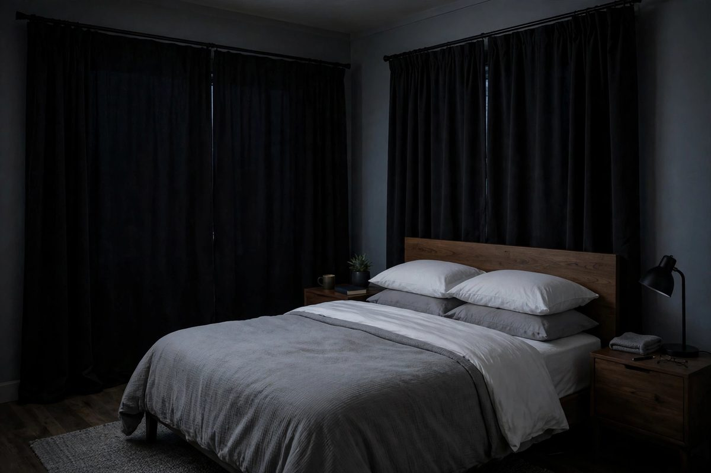

Setting Up Your Sleep Environment
How to make your bedroom dark, cool and quiet, and why the room matters as much as the routine.
Your bedroom is the stage for a third of your life, and small changes to it can make a large difference to sleep. Light, temperature, noise and comfort all affect how quickly you fall asleep and how deeply you sleep. This guide covers the changes that matter most, in order, so you can start with the ones that help first.
Darkness first
Light is the strongest enemy of sleep, because it suppresses melatonin and tells the brain to wake. Make the bedroom as dark as you can: blackout curtains or blinds, no standby lights, and no glowing chargers. If you cannot block all light, an eye mask is a cheap and effective alternative. Keep the hallway light off if you get up at night, and use a dim night light rather than a bright one. Darkness is the first change to make, because it is cheap and it works.
Cool temperature
The body cools down to fall asleep, and a cool room helps that process. The recommended bedroom temperature is around 18 degrees Celsius, though personal preference varies between about 16 and 20 degrees. A room that is too warm is one of the most common reasons for restless sleep, especially in summer. Use light bedding you can adjust, open a window for fresh air, or use a fan, which also provides a steady background sound that masks other noises.
Quiet, or steady sound
Sudden noises wake you, but steady background sound usually does not. If your street is noisy, earplugs or a white noise machine can help, and a fan serves the same purpose. Avoid falling asleep to the television, because the changing sound and light fragment sleep. If you share a bed with someone who snores, earplugs are worth trying, and the snorer should see a doctor if the snoring is loud and regular, because it can signal sleep apnoea.
Comfort: mattress, pillow and bedding
A mattress that is too soft or too firm can cause pain and restless sleep, and most mattresses need replacing after seven to ten years. A pillow should support your neck in a neutral position: side sleepers usually need a thicker pillow, back sleepers a thinner one. Bedding should be breathable and washable, and it should be clean: wash sheets weekly, because a fresh bed is both more comfortable and more inviting. Comfort is personal, so trust how you feel in the morning rather than a brand or a price.
Keep the bedroom for sleep
Use the bedroom for sleep and intimacy, not for work, television or scrolling. When the brain associates the bedroom with wakeful activities, it becomes harder to fall asleep there. If you work from home, work in another room. If you must use a screen in the evening, do it elsewhere, and go to the bedroom only when you are ready to sleep. A bedroom that is dark, cool, quiet and reserved for sleep is the easiest place to fall asleep in.
Upgrading a bedroom for under fifty dollars
The most effective bedroom upgrades are cheap. Blackout curtains or an eye mask cost little and block the light that suppresses melatonin. Earplugs cost almost nothing and block the noise that fragments sleep. A fan cools the room and provides steady background sound. Fresh sheets, washed weekly, make the bed inviting. A dim night light for the hallway avoids bright light if you get up at night. The total is well under fifty dollars, and the effect is often larger than an expensive mattress or a sleep tracker. Start with darkness, then temperature, then noise, in that order, because that is the order of their effect on sleep, and each change can be tested for a week before the next one.
Frequently Asked Questions
What temperature is best for sleep?
Around 18 degrees Celsius, though personal preference varies from about 16 to 20 degrees. A room that is too warm is a common cause of restless sleep.
Do I need blackout curtains?
They help a lot, especially in summer or if street lights shine in. An eye mask is a cheap alternative that works well.
Should I use white noise?
It can help if your street is noisy, because steady sound masks sudden noises. A fan works the same way.